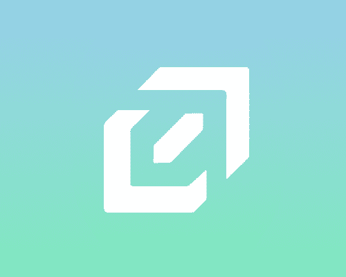
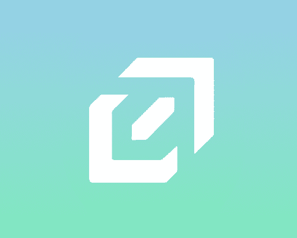

Cadence programming language formatter
Built a code formatter for Flow's Cadence language to improve developer productivity.

High-severity security vulnerability reward
Discovered a high-severity DoS vulnerability, and received a responsible disclosure reward.

Interact: transaction registry explorer for Flow
Created a web app for testing and exploring verified Flow transaction templates.

LinkLock: community membership management protocol
Developed on-chain smart contracts and a client app for managing blockchain memberships.

Flowser: development tool for Flow
Built a desktop app for Flow developers with CLI integration and advanced developer tools.

Flow FLIP-fest 2021 winners
Won Flow's two-month FLIP-fest hackathon with the Flowser Block Explorer GUI, sparking the creation of the Flowser developer suite.